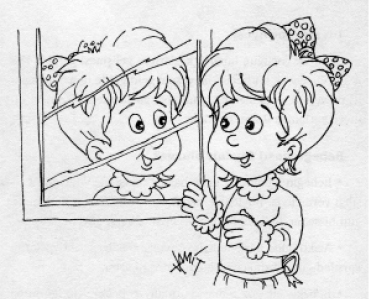
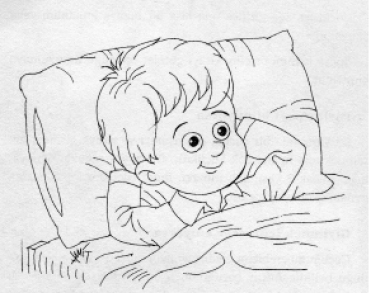
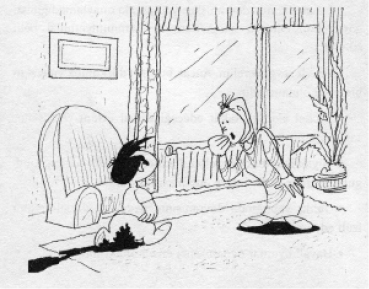

Çocuğun doğumundan, emeklemesine ve yürümesine kadar geçen yaklaşık bir yıllık süreye “bebeklik” denir.
Çocuğun bu ilk yılı, hayatının en önemli dönemidir. Çünkü bu bir yıl içinde çevresi ve kendisi hakkında en temel duyguları öğrenecektir. Bu yüzden bebeği acıktığında doyurur, sık sık kucağımıza alır ve ağladığında ilgilenirsek kendisi ve çevresi hakkında iyi şeyler hissedecek, güven duymayı kavrayacaktır.
Bebeği besleyerek, kucaklayarak, onunla konuşarak, şarkılar söyleyerek, altını değiştirerek, yıkayarak, anne sütü vererek ve diğer ihtiyaçlarını gidererek aramızda büyük bir bağ oluşturmalıyız.
İyi gelişen bir bebek, dünyayı merakla kucaklar. Her yerde heyecan ve zorluk görür: Gelip giden yeni çehreler, sıra dışı sesler çıkaran arabalar, yeni yemekler, yeni yerler, başka çocuklar... Dünyada dokunacak, tadacak, izleyecek bir sürü şey vardır. Ama aynı dünya tehlikeli de olabilir.
Yeni doğmuş bebek bile tepki verebilen zeki bir varlıktır ve tatlı sözlerle gönlü yapıldığı takdirde ta başından itibaren anne ve babası ile neşeli, uyumlu bir ilişki içine girebilir. Bebek her şeyi bilir, hisseder. Bebek ebeveyninin kalbinin derinliklerini görür, düşüncelerinin rengini fark eder. Sağlıklı izlenimler, tatlı sesler ve ışık, uygun sıcaklık, sevgi ve uyum, çocuğun bedenini doğru şekilde geliştirip serpilmesine yardımcı olur.
Sevgiyle ve ilgiyle büyüyen bir çocuk daima güvenlik için ebeveyninin yanına dönebileceğini bilerek normal korku ve endişeyi tecrübe kazanırken, ihmal veya taciz edilen bir çocuk, genellikle tehlikeleri umursamayacaktır.
Şunu belirtelim:
Her çocuk kendine özeldir. Kendine has huyları vardır. Birbirlerinden büyük farklılıklar gösterebilirler. Ama hepsi tatlıdır, mutludur ve her şeyi merak ederler.
Bebek Sürekli Ağlıyorsa
Doğumu izleyen birkaç hafta boyunca bebekleri sık kucağa alıp okşamak, ağlayıp sızlamalarının azalmasına çok yardımcı olur.
Bebek ağladığında muhakkak bunun bir sebebi vardır. Konuşamadıklarından isteklerini ağlayarak dile getirirler. Ya açtırlar veya yorgunluk çekiyorlardır. Bazen de gazları olduğu için ağlamaktadırlar.
Ağlayan bebeği rahatlatmalıyız. Önce doyurmayı denemeli, sıkıca kucağımızda tutmalı, olmazsa battaniyeye koyarak sallamalıyız.
Tuvalet Terbiyesi
Özellikle çocuğun büzücü kaslarının gelişmesi gerekir. Kas kontrolü, çocuk bir buçuk-iki yaşına geldiğinde tamamıyla gelişir. Daha önce denemek, yani çocuğu tuvaletini kontrol etmeye zorlamak doğru değildir.
Bebeğe Nasıl Faydalı Oluruz?
• Bebeğin ağlayışına karşı hassas olmalıyız ve uygun karşılığı vermeliyiz. Böylelikle bebek konuştuğunu ve dinlenildiğini hisseder. İletişim kurma becerisine karşı güveni gelişir.
• Acıktığında beslemeliyiz. Çevresindekilerin, ihtiyaçlarını karşıladığını gördükçe insanlara güveni artar.
• Bebekle sık göz teması kurmalıyız. Bebek için, gördüğü çehreler eğlenceli ve iyi birer bilgi kaynağıdır. Giderek insanların duygularını okuma becerisi kazanırlar.
• Bebeği uzun süre kucakta tutmalıyız. Böylelikle korkuları yatışır. Kendini daha iyi hisseder ve rahatlar.
• Üzgün, kırgın ve sıkıntılı olduğunda bebeği rahatlatırsak, anlaşıldığını ve yardım edildiğini öğrenir.
• Görüş alanı içerisine ilgisini çekecek renkli oyuncaklar, nesneler koyalım.
• Anne, bebeğini kucağında çokça taşımalıdır. Çünkü ana kucağı bebek için çok hoş, ilginç ve tecrübe dolu bir yerdir.

• Bebeği yakınımızda uyutmalıyız. Böylelikle uykunun zevk veren ve korkulmaya gerek olmayan bir süreç olduğunu kavrayacak, sağlıklı uyku alışkanlığı gelişecektir.
• Bebekle ilgilenelim ve bol konuşalım. Karşılıklı oyunlar oynayalım.
• Bebeğin aynada kendisini görmesini sağlayalım. Böylece kimlik duygusunun gelişimini desteklemiş oluruz.
• Bebeğe sevgi ve mutluluklarımızı yansıtmalıyız. Böylelikle çevresindekilere mutluluk yaydığını görecek ve daha bir mutlu olacaktır.
Bebeğimizin emeklemeye başlamasından, ortalama olarak ikinci doğum gününe kadar geçen süreye “emekleme çağı” denir. Aynı zamanda bu yaş; keşfetme, her tarafı hevesle araştırma, adeta her yerin altını üstüne getirme dönemidir.
Bu keşifleri gerçekleştirirken, kendinden duyduğu şüpheyi, oluşturduğu “kendine güven” duygusu ile yenmeyi öğrenecektir. Çocuk çevresini araştırmakta ve keşfetmekte serbest olmalıdır. Bunu yaparken küçük ve büyük kaslarını kullanacak, yürüyecek, koşacak, tırmanacak, atlayacak; bebekleri, araba ve kamyonları ile oynayacak; ellerini çamura, kuma ve suya bulayacak; konuşmaya çalışırken tüm sesleri çıkarmaya çalışacak; kitaplarla oynayacak ve kendisine kitap okunmasını isteyecektir. Eğer bunları yapmakta serbest olursa ve yapmak için cesaret verilirse kendisine olan güveni gelişecek, hayatının ilerleyen yıllarını “özgüveni olan bir kişi” olarak yaşayacaktır.
Ancak çocuk, büyüklere göre düzenlenmiş bir çevreye uymaya zorlanırsa ve etrafı hep “hayır” sözü ile çevrilirse, her hareketi kısıtlanıyorsa kendini kötü görecek, özgüveni yeterli bir şekilde oluşmayacaktır.
Bu yaştaki çocuğumuzun enerjisine ve dünyaya karşı merakına rağmen, dünya kendisinden çok daha büyüktür. Ne kadar cesur olsa bile, çevresi üzerinde hâlâ yeterince hâkimiyeti yoktur. Dünyayı algılama şekli sınırlıdır. Ve muhtemelen karşılaştığı yeni şeyler karşısında hâlâ şaşkınlık duyacaktır.
Nelere Dikkat Edilmeli?
• Çocuğun serbestçe hareket edebileceği güvenli bir ortam hazırlanmalıdır.
• Çocuğun çevresi, onun bedensel olgunlaşmasına uygun, çeşitli ve nitelikli araçlarla donatılmalıdır.
• Çocuk, gerçek hayat şartlarıyla karşı karşıya bırakılmalı; onun çeşitli sembolleri kullanmasına ve karşılaştıkları problemleri çözebilmek için denemelerde bulunmasına fırsat verilmelidir.
• Çocuktan her zaman karmaşık hareketleri yapması ve karşılaştığı sorunları çözebilmesi beklenmemelidir.
• Çocuk, basit veya karmaşık bir hareketi tam ve hatasız yaptığı zaman; bir problemi, uygun prensipleri tatbik ederek çözdüğünde ödüllendirilmelidir.
Çocuk Yemek Yemiyorsa
Üzülmeye gerek yok. Besleyici yemekler hazırlayalım ve istediği kadar yemesi için önüne serelim. Ancak sakın yemek aralarında bir şey yemesine izin vermeyelim. Açlık duygusu ile mutlaka yiyecektir. Problem genellikle, çocukları bir-iki yemekte mızmızlanınca paniğe kapılan anne-babalar tarafından oluşturulur. Bu yüzden yemeği hazırlayalım, önüne koyalım ve soğukkanlı davranmaya gayret edelim. Er-geç yemeğini yiyecektir.
Ortalığı Karıştırıyorsa
Çevreyi önce güvenli bir hale getirelim ve bırakalım rahatlıkla oynasın, dolaşsın. Evimizi, çocuğa zarar verebilecek eşyalardan arındırırsak, sürekli olarak arkasında dolaşmak zorunda kalmayız.
Başkasını Isırıyorsa
Çocuğumuz birini ısırdığında kolunu sıkıca tutarak sert bir tonda, “Isırmak yok!” diyelim. Giderek bırakacaktır.

Zamanında Uyumuyorsa
Yatma zamanı anne-babalar için daima problemdir, çünkü psikolojik olarak çocuklar için güç bir iştir.
Yatmaya giden çocuk, anne ve babasının heyecanlı dünyasından ve aydınlık odadan uzaklaşacak, televizyon seyredemeyecek, ilginç şeyler yapmak yerine sıkıcı yatağına ve karanlık odasına giderek uyumak zorunda kalacaktır.
Bu onlar için eğlenceli olmaktan çok uzaktır. Çocuklar, yorulduklarının ve uyumaları gerektiğinin farkına varamazlar. O zaman onları nasıl razı edebiliriz?
Çocuğumuza banyo yaptırarak yatma programımıza başlayalım. Banyoda istediği kadar kalmasına, suyla ve oyuncaklarıyla oynamasına izin verelim. Hazır olduğunu, çıkmak istediğini söyleyince ikinci aşamaya geçelim.
Çocuk yatağa girince ona kısa bir hikâye anlatalım veya okuyalım.
Sonra üstünü örtelim ve iyi geceler öpücüğü ile uyumaya bırakalım.
Paylaşmayı Bilmiyorsa
İki yaşındaki bir çocuk, paylaşmayı ve sıraya girmeyi öğrenmek için henüz çok küçüktür. Bir başka çocukla oynayamaz. Ancak 3 yaşından itibaren diğer çocuklarla paylaşarak oynamaya başlayacaktır.
Giyinmek İçin Israr Ediyorsa
Çocuğumuzu bizim giydirmemizin daha çabuk ve kolay olduğu bellidir. Ancak çocuğumuzu biz giydirirsek öğreneceği fazla bir şey yoktur. Oysa kendi kendine giyinirken, zorluk çekse bile, öğreneceği çok şey vardır. Bırakalım kendi yapsın.
Yürümeye ve konuşmaya başlayan çocuk, bu yaşta artık “annesinden bağımsız olduğunu” ilan eder. Bunu ispatlamak için de denilenin tersini yapar.
Kısacası; inatçılık gösterir.
Bu yaş, aynı zamanda aşırılıklar dönemidir. Birbirine zıt istekler arasında sürekli gidip gelecektir. Davranışları sinir bozucu gelse de saflığı, dünyaya ve yeni her şeye karşı duyduğu hayreti, cömertliği, hayal gücü ve yaşamaya karşı inanılmaz iştahı ile aslında çok sevimlidir.
Bu dönemdeki çocuklarımızı aşırı kontrol ederek devamlı çatışmak da yanlıştır, her dediğini yaparak ve her istediğine boyun eğerek şımartmak da...
Bu yaş, çocuğun bir başka özelliği de dünyayı keşfetme gayretidir ve hep soru sorar. Bu sorularını ciddiyetle cevaplandırmamız gerekir.
Çocuğumuzun gelişimi için mutlu, huzurlu, hoşgörülü bir aile ortamı oluşturmalıyız. Çocuk sevildiği ve kabul gördüğünü bilmelidir.
Çocuğa yaşıtlarıyla bir arada olma fırsatı hazırlamamız önemlidir. Böylece paylaşma, uzlaşma, yardımseverlik duygularını yaşayacak, sosyal gelişimi desteklenecektir.
Yine yetişkinlerle karşılaşması da etkileşimi ve yeni şeyler öğrenmesi açısından teşvik edilmelidir.
İnatçılığına Ne Yapmalı?
Aslında çocuğun inatçılığı duygusal gelişimiyle ilgili bir problemdir. Özellikle 2-4 yaşları arasında bağımsız davranmaya çalışan, kendine güveni sonsuz olan çocuk, engellenmeyle karşılaştığında inatçılık gösterebilir.
Bu durum doğal karşılanmalı, paniğe kapılarak karışıklığa sebep olmanın önüne geçilmelidir. Bu yüzden:
• Ebeveynler olarak inatçı davranışlar sergileyerek çocuğumuza kötü örnek olmayalım.
• Temel ihtiyaçlarını zamanında karşılayalım. Ona sert davranmayalım. Gelişimine uygun hareket edelim.
• Baskıcı, tutarsız ve ilgisiz davranmaktan kaçınalım.
• İnatçılık yaparak isteklerini elde etmesine izin vermeyelim. Aksine inatlaşmadığı hallerde isteklerini yerine getirerek çocuk bu duruma özendirilmelidir. Disiplin ve kurallar konusunda tutarlı ve kararlı bir davranış tatbik edelim.
Çocuğumuzun bu yaşlarda geliştirdiği beceri ve yetenekler, kişiliğinin binasını oluşturacaktır.
Bu dönemde dürtüler üzerinde kontrol sistemi gelişir. Anneden ayrı kalmayı öğrenir. Arkadaşlarıyla paylaşmaya alışır, duygularını açığa vurur veya içinde tutar, cinsiyetinin farkına varır. Çocuk daha olumlu ve dengelidir artık. Sosyalleşmesi artmıştır.
Üç yaşındaki zorluklardan sonra, çoğu anne-baba için bu dönem, huzur dolu addedilir. Öncelikle çocuğun üzerine düşülmesi gerekir. Çünkü duygusal ve zihinsel yönden büyük gelişmeler yaşadığı dönemdir. Diğer insanların duygularına karşı oldukça duyarlıdır. Başkalarını mutsuz, üzgün görünce anlar ve ilgi gösterir.
Çocuğun davranışları daha düşünceli, işbirliğine yatkındır. Arkadaşlık ilişkileri daha önemli hale gelmiş, saldırganlık duyguları azalmıştır. Kendinin daha çok farkındadır.
Televizyona Dikkat!
Özellikle 5-6 yaş arasındaki çocuklarda televizyon önemli derecede uyku bozukluklarına yol açabilmektedir. Uyku düzensizleşmekte, sık uyanma ortaya çıkabilmektedir.
Neler Önemli?
• Çocuğun daha bağımsız hale gelmesi için giyinme, banyo, yemek gibi kişisel bakımını yapmasına teşvik edelim.
• Ev işlerinde annesine yardımcı olmasına destek verelim.
• İstemediğimiz davranışları yaptığında onaylamadığımızı gösterelim. Olumlu hareketlerinde memnuniyetimizi belli edelim.
• Yeterli sevgi verelim. Ancak bu aşırı düşkünlük ve taşkın bir sevgi olmamalıdır.
• Model alacağı, taklit edeceği sosyal ortam ve ilişkiler sağlayalım.
• Söylediklerini dinleyelim. Fikirlerini takdir edelim. Duygularını ifade etmesine ve anlamasına yardımcı olalım.
• Yanlış yaptığında davranışının neden yanlış olduğunu izah edelim.
• Hayalî oyunlar oynamasına engel olmayalım.
Her anne-baba çocuklarının bir an önce tuvalet temizliği alışkanlığını kazanmalarını isterler. Oysa çocuklar, kas kontrolü bakımından belli bir olgunlaşma seviyesine gelmeden bu olmaz.
Çocukların kas kontrolünü kazanmaları bakımından aralarında bireysel farklılıklar vardır. Ancak genellikle, 18-20 ay civarında tuvalet eğitimi almaya hazır olduklarının ipuçlarını verirler. Mesela, önce altını ıslatan bir çocuk, altını ıslattığını annesine anlatmaya çalışır. Daha sonra yapmak üzereyken anlatır, heyecanlanır. Tuvalete doğru gitmeye çalışır, ancak yetişemez. Böylece ilk tuvalet kontrolü kurma aşamasında, çocuk küçük tuvaletini tutamaz ve uzun süre bekleyemez. İşte bu dönemde anne, düzenli olarak her sabah, kahvaltıdan sonra çocuğunu tuvalete götürmelidir.

Ancak bu süreçte anne, çocuğunun yanında olmalı, beklemeli ve çocuğun tuvalete oturma süresi çok uzun olmamalıdır. Eğer bu esnada çocuk çişini oturağa yaparsa anne onu ödüllendirmelidir. Ödül her zaman maddi olmamalı, teşvik ve övgüye daha çok yer verilmelidir. “Aferin, benim kızım büyüdü artık” gibi güzel sözler, alkış, başını okşamak gibi ödüller kullanılabilir.
Çocuğu tuvalete zorla oturtmamalı, kalkmak istemediğinde kaldırılmalıdır. Çünkü başlangıçta zorla tuvalete götürülen ve oturtulan çocuklar, daha sonraki aylarda tuvalete gitmeyi ve kullanmayı reddederler.
Tuvalet eğitimi verilirken zorlama yapılan çocuklar, genellikle tuvalete çişlerini yapmazlar. Bu çocuklar, tuvaletten kalkar kalkmaz, çişlerini çamaşırlarına yaparlar veya uzun süre tutarak anneye olan kızgınlıklarını yansıtır ve bir şekilde intikam alırlar.
Genellikle, iki yaşına gelen çocuklar, çişleri geldiğinde annelerine haber verirler. İşte bu aşamada anneler, sabah kalkınca her yemekten sonra ve gece yatmadan önce çocuğu tuvalete götürmelidirler.
Çocuklar önce küçük, daha sonra büyük tuvalet kontrolünü kazanırlar. Yine önce gündüz kontrol etmeyi öğrenirler, daha sonra gece.
Üç yaş civarında çocuklar gündüz tuvalet kontrolünü kazanmış olurlar. Ancak, özellikle oyuna dalan çocuklar tuvalet ihtiyaçlarını gidermek üzere son dakikaya kadar beklerler ve bazen de kaçırabilirler.
Anne ve babalar tuvalet temizliği alışkanlığını çocuklarına kazandırırken, şu noktalar dikkat etmelidirler:
1. Çocuk, henüz hazır değilken tuvalet temizliği alışkanlığı vermeye kalkmamalıdır. Çünkü henüz çocuğun ilgili kasları gerekli olgunluğa ulaşmamıştır.
2. Tuvalet alışkanlığı verirken aşırı titiz, baskıcı, zorlayıcı ve cezalandırıcı olunmamalıdır. Bu tutum, hem çocuğun tuvalet temizliği alışkanlığını geç kazanmasına, hem de çocukta yetişkin yaşantısında olumsuz kişilik özellikleri ortaya çıkmasına yol açabilir.
3. Anne-babalar bu süreçte özverili, hoşgörülü ve sağduyu sahibi olmalı, çocuğa sabırlı ve müşfik yaklaşmalıdırlar.
* * *